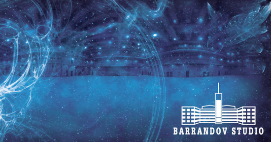
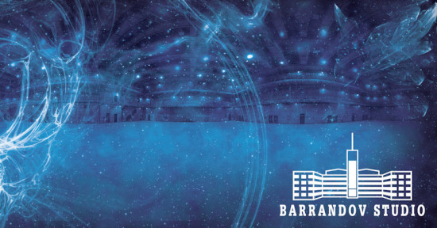

Barrandov Studios
illustrations / 2006
 

Barrandov Studios - One of the largest and the oldest film studios in Europe
Goal of the project
Create an original PF design with a film studio's motive for one of the most famous Czech film studios.
Description of the solution
The client provided photos of his studios, which were used as a fundamental part of a digital collage. This base had been improved by post processing techniques, Photoshop filters and effects, all in high resolution ready for print. The final part, which had to be done, was print pre processing.
My work on this project
I worked on this project as a freelancer. I had just few days to finish the project from scratch. It was really challenging job, but the client was really happy with the result.